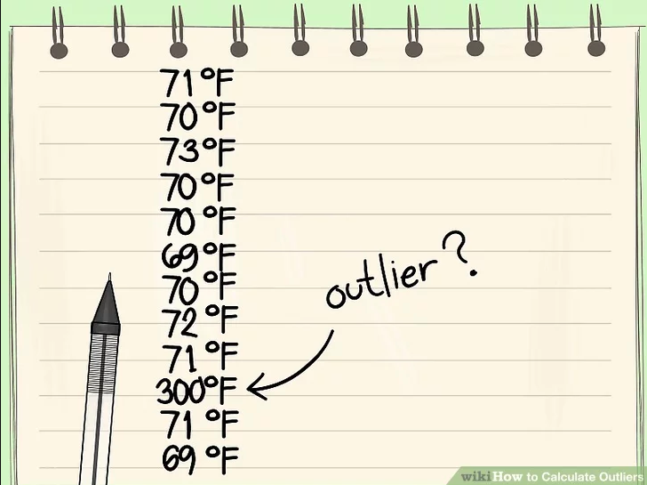

Outliers Detection
In this step, we will show a report of the outliers of the data set we are working on. In statistics, outlier is an observation that presents a considerable difference compared to other observations in the data, in some cases this outlier may indicate anomalies in the data resulting from errors in data collection, as at the time of typing an incorrect value is inserted or in other cases these values are captured by a defective sensor, for example in addition to other adverse factors.
{% for dict_item, count in elements|zip(range(num)) %}
Column: {{dict_item['name']}}

Number of instances: {{dict_item['elements']}}
Percent of outliers: {{dict_item['percent_outliers']}}%
Total outliers: {{dict_item['sum_outliers']}}